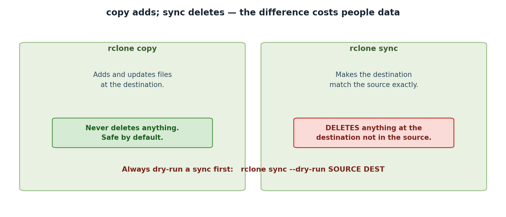

Syncing Basics
Last updated on 2026-08-27 | Edit this page
Estimated time: 25 minutes
Overview
Questions
- What is the difference between
rclone copyandrclone sync? - When should I use sync vs copy?
- What is a one-way mirror and why is it useful?
Objectives
- Understand when to use
rclone copyvsrclone sync - Implement one-way mirroring (sync from source to destination)
- Set up workflows for backing up HPC results to cloud storage
Copy vs Sync: The Critical Difference

rclone copy: Additive (Safe)
- Copies files from source to destination
- Only adds files to destination; never deletes
- If destination has extra files, they stay untouched
- Safe for backups and collaboration
Example:
Before copy:
Source: file1.txt, file2.txt
Dest: file3.txt
After copy:
Dest: file1.txt, file2.txt, file3.txt <- All three present!rclone sync: Mirroring (Destructive)
- Makes destination an exact mirror of source
- Deletes files in destination that don’t exist in source
- Fast and powerful for one-way synchronization
- Dangerous if you don’t understand what you’re doing
Example:
Before sync:
Source: file1.txt, file2.txt
Dest: file1.txt, file2.txt, file3.txt
After sync:
Dest: file1.txt, file2.txt <- file3.txt DELETED!When to Use Each
Use rclone copy for:
- Backing up work (source = your files, destination = backup)
- Adding files to an archive that might have other content
- Collaboration when multiple people modify files
- Incremental backups
Workflow 1: Backing Up HPC Results to Box
You run a 3-day simulation on Sagehen HPC that produces results in
/scratch/results/. You want to backup these results
to Box before they age out of /scratch.
The Safe Approach: Use rclone copy
This copies all files. Running the command again only copies changed files and doesn’t delete anything from Box.
Workflow 2: Syncing HPC Results (One-Way Mirror)
You’re running daily simulations and want to keep a mirrored copy on Box. Each day, only the latest results matter; old results should be cleaned up.
Preventing Mistakes: Key Commands
Common Mistakes to Avoid
Mistake 2: Using sync when you mean backup
sync makes the destination match the source –
including deleting files from the destination when they disappear
locally. That is exactly the point of Workflow 2’s one-way
mirror (only the latest results matter, old ones should
be cleaned up). But for a backup – where losing a local
file must never delete the only remaining copy – it is dangerous:
BASH
# WRONG for a backup! Deletes files from Box if you lose them locally
rclone sync /scratch/work pomona-box:/backup
# RIGHT for a backup: copy only adds and updates, never deletes
rclone copy /scratch/work pomona-box:/backupRule of thumb: sync for mirrors you want pruned,
copy for backups you want to keep.
Challenge 7.1: Set Up a Mirror Workflow
Create a mirror of a local folder to Box:
BASH
mkdir -p ~/mirror-test
echo "Version 1" > ~/mirror-test/file.txt
# Sync to Box (dry-run first!)
rclone sync ~/mirror-test pomona-box:/mirror-test --dry-run
rclone sync ~/mirror-test pomona-box:/mirror-testNow modify locally and sync again:
Verify:
Record: Did the content change to “Version 2”?
Challenge 7.2: Practice Selective Deletion with Sync
Create a scenario where sync would delete files:
BASH
mkdir -p ~/sync-test
echo "Keep this" > ~/sync-test/keep.txt
echo "Delete me" > ~/sync-test/delete.txt
rclone sync ~/sync-test pomona-box:/sync-testNow delete locally and preview the sync:
Record: Does the dry-run show that
delete.txt would be deleted from Box?
The dry-run with -vv should show:
2026/03/05 16:10:00 INFO : delete.txt: Deleted (dry run)After executing
rclone sync ~/sync-test pomona-box:/sync-test, only
keep.txt remains on Box. This demonstrates that
rclone sync deletes destination files not present in the
source.
- rclone copy is safe for backups (additive only), while rclone sync creates an exact mirror and deletes files not in the source
- Always preview sync operations with –dry-run before executing to avoid accidental data loss
- Use rclone copy for backups and rclone sync only for one-way mirroring where you want the destination to exactly match the source
- Reversing source and destination in rclone sync is a common and dangerous mistake